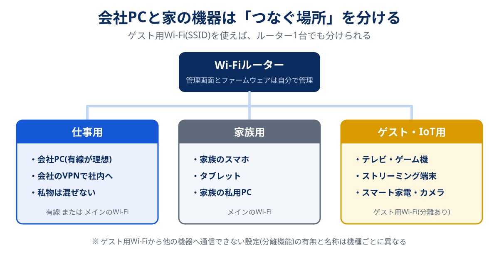

2023年3月、警察庁は「家庭用ルーターの不正利用に関する注意喚起」を出しました。攻撃者が家庭のルーターを外部から操作してVPN機能などを勝手に有効にし、企業への攻撃の踏み台にする手口が確認されたという内容で、一度設定を書き換えられると、パスワード変更やファームウェア更新といった従来の対策だけでは不正な状態が解消されない、と書かれています。追加された対策は「見覚えのない設定変更がないか、定期的に確認する」でした。
家の中の機器が踏み台にされる問題は、その後も続いています。総務省が2026年9月7日の会議で示した資料では、家庭に置かれた動画ストリーミング端末などのIoT機器が知らないうちに攻撃の中継点にされる「レジデンシャルプロキシ」について、2024年のネットバンキング不正送金のうち少なくとも約44%がこの経由とされるという警察庁の分析が紹介されています。家庭のLANの中に潜むため、従来の調査では見つけにくいとも書かれています。
在宅勤務のセキュリティというと、会社から渡されたPCとVPNの話になりがちです。ただ、会社が管理しているのはPCとその先の社内システムまでで、PCがつながっている自宅のルーター、同じWi-Fiにいるテレビやスマート家電は、たいてい誰も管理していません。この記事では、その「誰も見ていない自宅側」に絞って、ルーターの管理画面で確認する7項目、会社PCを家の機器から分ける方法、回線の種類ごとの注意点、ルーターの買い替え判断までを整理しました。
在宅勤務で自分が守るべきなのは、会社PCの手前にある「ルーター」と「同じWi-Fiにいる家の機器」です。まず15分で、ルーターの管理画面で①管理者パスワード ②Wi-Fiの暗号化方式(WPA2/WPA3) ③ファームウェア ④外部からの管理画面接続 ⑤VPN機能とアカウント ⑥DDNS・ポート開放 ⑦接続中の端末の7項目を確認します。次に、テレビやストリーミング端末、スマート家電をゲスト用Wi-Fiに移して会社PCと分けること。そして、メーカーのサポート(ファームウェア更新)が終わったルーターは買い替えること。買い替えるなら、2025年に始まった国のIoTセキュリティ制度「JC-STAR」の★1ラベルが目安になります。
スマホはどれ?共用回線から自分の回線へ:GMOとくとくBB光の条件を見る公式サイトへ →PR・申し込み前にキャッシュバックの受け取り条件を確認できます

共用のネットや古い機器を、回線ごと見直したくなったら
住まいのタイプとスマホのセット割から、候補を数社まで絞り込めます。乗り換えにかかる総額も、特典込みで試算できます。
会社が守る範囲と、自分が守る範囲
最初に、在宅勤務の通信が通る道筋を分解しておきます。会社PCから社内のシステムやクラウドに届くまでには、PC → 自宅のWi-Fi/LAN → ルーター → 回線(光・ホームルーターなど) → インターネット → 会社のVPN装置やクラウドという区間があります。このうち、会社の情報システム部門が設定や監視をしているのは、多くの場合、両端のPCと社内側だけです。
| 区間 | 主に管理しているのは | 起きうること |
|---|---|---|
| 会社PC(OS・ウイルス対策・ディスク暗号化) | 会社 | 更新を後回しにすると、会社の対策が効かない期間ができる。更新の実行は自分の手で |
| 会社のVPN・社内システム・クラウド | 会社 | 接続方法やルールは会社の規程に従う。個人で設定を変えない |
| 自宅のWi-Fi(暗号化・パスワード) | 自分 | 暗号化が古い・パスワードが弱いと、近くの第三者に入り込まれる |
| ルーター(管理画面・ファームウェア・各種機能) | 自分(レンタル品は事業者と分担) | 初期パスワードのまま・更新停止の機種だと、外から設定を書き換えられ、踏み台にされることがある |
| 同じWi-Fiにいる家の機器(テレビ・ゲーム機・家電・カメラ) | 自分(家族) | 出どころの怪しい端末が攻撃の中継点にされる。同じLANにいる機器を探られる |
| 回線(光回線・ホームルーター・マンションの共用設備) | 事業者・建物の管理側 | 共用型の無料インターネットでは、建物内の他の部屋と同じネットワークになる方式もある |
VPNは、PCと会社の間の通信を暗号化するトンネルです。トンネルの中身は守られますが、トンネルの入口がある自宅のルーターが乗っ取られていたり、同じWi-Fiに怪しい機器がいたりする状態までは直してくれません。総務省の「テレワークセキュリティガイドライン(第5版)」も、テレワーク端末だけでなく、自宅のネットワーク環境を含めた対策を利用者に求める構成になっています。
この記事で扱うのは、表の「自分」の行です。会社PCの設定やVPNの接続方法は、勤務先の規程と情報システム部門の指示が優先します。自分で判断せず、迷ったら会社に確認してください。
ルーターの管理画面で確認する7項目
総務省の「自宅Wi-Fi利用者向け 簡易マニュアル」(2025年2月版)が挙げる5つのポイントと、警察庁・警視庁の注意喚起で追加された確認項目を、管理画面で見る順に7つにまとめました。所要時間は15分ほどです。管理画面の開き方(ブラウザで開くアドレスと初期のログイン情報)は、本体のラベルか取扱説明書に書かれています。
| 確認項目 | 望ましい状態 | 管理画面での探し方の目安 |
|---|---|---|
| ① 管理者パスワード | 初期値から変更済み。Wi-Fiのパスワードとは別の、長く推測されにくいもの | 「管理者パスワード」「ログインパスワード」「メンテナンス」 |
| ② Wi-Fiの暗号化方式 | WPA3、または WPA2(AES)。WEPやWPA(TKIP)は使わない | 「無線設定」「暗号化モード」「セキュリティ」 |
| ③ ファームウェア | 最新版。自動更新が有効 | 「ファームウェア更新」「自動更新」「バージョン情報」 |
| ④ インターネット側からの管理画面接続 | 無効(使った覚えがないならオフ) | 「リモート管理」「WAN側からのアクセス」「外部からの設定」 |
| ⑤ VPN機能(VPNサーバー)とそのアカウント | 使っていないなら無効。見覚えのないアカウントが無い | 「VPNサーバー」「リモートアクセス」「PPTP」「L2TP/IPsec」 |
| ⑥ DDNS・ポート開放(ポート転送) | 自分で設定した覚えがあるものだけ | 「DDNS」「ポート変換」「ポートマッピング」「UPnP」 |
| ⑦ 接続中の端末一覧 | 全部に心当たりがある | 「端末一覧」「クライアント一覧」「接続中の機器」 |
このうち④⑤⑥は、警察庁の注意喚起で名指しされた項目です。攻撃者は、外から入り込んだルーターのVPN機能を有効にして自分用のアカウントを追加し、DDNSで居場所を固定して、そのルーターを経由地として使います。自分で有効にした覚えがないのにオンになっていたら、それ自体が異常のサインです。
-
管理画面に入り、まず管理者パスワードを変える
本体ラベルの初期値や「admin」「password」のような単純な値のままなら、最初に変更します。家族と共有している紙のメモがあれば、Wi-Fiのパスワードと管理者パスワードを区別して書き直しておきます。
-
暗号化方式とファームウェアを確認する
WPA3に対応した機種で、家の端末が全部WPA3に対応しているならWPA3、古い端末があるなら「WPA2/WPA3」の混在モードが現実的です。ファームウェアは手動で最新版を確認し、自動更新があればオンにします。
-
外から入れる機能(④⑤⑥)を一つずつ見る
使っていない機能はオフにします。ゲーム機の通信のためにUPnPを使っている家庭は多いので、UPnPは一律に切るより「ポート開放の一覧に見覚えのない項目がないか」を見るほうが実用的です。
-
接続中の端末を数え、心当たりのない機器を確認する
機器名が分かりにくい場合は、スマホやテレビのWi-Fiを一度切って一覧から消えるか見ると判別できます。どうしても分からない機器があれば、Wi-Fiのパスワードを変えて全端末をつなぎ直すのが確実です。
-
確認した日付をメモし、3か月に1回くり返す
警察庁の注意喚起が求めているのは一度きりの設定ではなく「定期的な確認」です。スマホのカレンダーに入れておくと続きます。
ルーターの電源を入れ直すだけでは、書き換えられた設定は元に戻りません。再起動で直る不調と直らない不調の違いはルーターの再起動に効果はある?で整理しています。
会社PCを家の機器から分ける方法
この記事でいちばん伝えたいのはここです。ルーターの設定を固めても、同じWi-Fiの中に出どころの怪しい機器がいれば、その機器から家の中のネットワークが見えてしまいます。冒頭の総務省資料が問題にしているのは、まさに「無料で国内外のテレビ番組が見られる」とうたう動画ストリーミング端末のような機器で、利用者が気づかないまま攻撃の中継に使われる例です。

多くの家庭用ルーターには、来客向けのゲスト用Wi-Fi(ゲストSSID)があります。機種によっては、ゲスト側の端末からメインのネットワーク上の機器へ通信できないようにする機能(名称は「ネットワーク分離」「プライバシーセパレーター」「ゲストポート」など機種ごとに違います)があり、これを使うとテレビや家電からは会社PCが見えない状態を作れます。どの機器をどこにつなぐかの目安は次のとおりです。
| 機器 | つなぐ場所 | 理由 |
|---|---|---|
| 会社PC | 有線LAN、またはメインのWi-Fi | 有線は電波を傍受される心配がなく、Web会議も安定しやすい |
| 家族のスマホ・私用PC | メインのWi-Fi | OSの更新が続いている端末なら、メイン側で問題ないことが多い |
| テレビ・ゲーム機・スマートスピーカー | ゲスト用Wi-Fi | 更新の状況が見えにくく、会社PCと通信する必要もない |
| 見守りカメラ・スマート家電 | ゲスト用Wi-Fi | 初期パスワードのまま使われやすく、NOTICEでも調査対象になる種類の機器 |
| 出どころ不明の格安ストリーミング端末 | つながない(使うのをやめる) | 分離しても回線を攻撃の中継に使われることまでは防げない |
| 来客のスマホ | ゲスト用Wi-Fi | メインのパスワードを教えずに済む |
- 分離機能が既定でオフの機種がある:ゲストSSIDを作っただけでは、メイン側と通信できる設定の機種もあります。取扱説明書で「ゲスト側からLANへのアクセス」の扱いを確認してください
- スマホのアプリで操作する家電は、スマホと同じWi-Fiにいないと設定できないことがある:初期設定のときだけスマホをゲスト側につなぐと解決することが多い傾向です
- ゲスト側の機能に有効期限がある機種がある:来客用として、一定時間で自動的に止まる設定の機種もあります。常用するなら期限をオフにします
ゲスト用Wi-Fiが無い古い機種や、メッシュWi-Fiの子機でゲスト側が使えない構成もあります。家の広さや機器の数によって、メッシュにするか中継機で足りるかの判断はWi-Fi中継機とメッシュWi-Fiの違いにまとめています。
VPNについてよくある誤解
「VPN」という言葉は、場面によって指しているものがまったく違います。在宅勤務で混同されやすい3種類を並べました。
| 種類 | 何を守るか | 在宅勤務での扱い |
|---|---|---|
| 会社のVPN(会社PCに入っている接続ソフト) | PCと社内システムの間の通信 | 会社の指示どおりに使う。社内システムに入るときの正規の入口 |
| 市販のVPNサービス(個人向けアプリ) | 端末とVPN事業者の間の通信。公衆Wi-Fiでの盗み見対策など | 会社PCに個人で入れるのは規程違反になりうる。会社のVPNと競合することも |
| ルーターのVPNサーバー機能 | 外出先から自宅のLANに入るための入口 | 使わないなら無効に。警察庁の注意喚起で悪用が指摘された機能 |
もうひとつの誤解は「VPNにつないでいれば、自宅のWi-Fiが弱くても大丈夫」というものです。VPNはトンネルの中を暗号化しますが、VPNにつなぐ前の通信や、VPNを通らない設定になっている通信(会社によってはWeb会議やクラウドサービスを直接インターネットに出す構成があります)は、自宅のWi-Fiとルーターの状態に左右されます。
また、自宅の回線の接続方式によっては、会社のVPNが「つながりにくい」「遅い」と感じることがあります。IPv6 IPoE(v6プラスなど)でIPv4の通信をする方式では、使えるポートの数や種類に制約があるため、VPNの方式との組み合わせによっては影響が出るケースがあると案内しているプロバイダもあります。症状が出たら、会社の情報システム部門に回線の接続方式を伝えて相談するのが近道です。接続方式の仕組みはIPv6(IPoE)とは?で、Web会議が途切れるときの切り分けはWeb会議が止まる・落ちるときの対処法で解説しています。
回線の種類別の注意点
同じ在宅勤務でも、どの回線を使っているかで「自分で見るべきところ」が変わります。2026年10月時点の一般的な構成をもとにした目安です。
| 回線・環境 | 自分で管理できる範囲 | 注意点 |
|---|---|---|
| 光回線+自分のWi-Fiルーター | ルーターの全設定 | 7項目をすべて自分で確認できる。管理しやすさでは最も有利 |
| 光回線+事業者のレンタルルーター | Wi-Fiの設定、一部の機能 | ファームウェアの更新方式と、機種の世代を確認。古い機種なら交換を相談できることも |
| マンションの無料インターネット(共用型) | 部屋に置く機器だけ | 建物内で同じネットワークを共有する方式がある。自分のルーターを挟み、部屋の機器を建物側から隔てるのが基本 |
| ホームルーター(5G・WiMAXなど) | Wi-Fiの設定、端末一覧など | ファームウェアは自動更新の機種が多い。管理画面のパスワードと暗号化方式は自分で確認 |
| スマホのテザリング | テザリングのパスワードのみ | つなぐのが会社PCだけなら、家の機器と混ざらない利点がある。通信量の上限に注意 |
| カフェ・ホテルなどの公衆Wi-Fi | なし | 同じWi-Fiに誰がいるか分からない。会社の規程で禁止されていることも多い |
見落とされやすいのが、マンションの共用型インターネットです。「無料」「工事不要」で便利な反面、建物全体で1つのネットワークを分け合う方式の場合、同じ建物の他の部屋の機器と同じネットワークに並ぶことがあります。在宅勤務をするなら、部屋の差し込み口に自分のルーターを1台挟み、会社PCはそのルーターの内側につなぐのが最低限の対策です。速度面の悩みも含めた見直し方は無料インターネットが遅いときの対策で、建物の設備の種類はマンションのネット回線の選び方で解説しています。
テザリングは「セキュリティのために」選ぶ人もいますが、毎日の在宅勤務をまかなうには通信量の上限が壁になります。どこまで使えるかの目安はテザリングを固定回線の代わりにできる人の条件を参考にしてください。
ルーターの買い替えを判断する3つの基準
7項目の確認をしても、ルーター自体がもう守れない状態のこともあります。次の3つのどれかに当てはまったら、買い替えを考える段階です。
| 基準 | 確認の仕方 | 当てはまったら |
|---|---|---|
| メーカーのサポート(ファームウェア更新)が終了している | メーカーの「サポート終了製品」「ファームウェア提供終了」の一覧で型番を探す | 買い替え。警視庁・総務省とも、更新が止まった機器は使い続けないよう呼びかけている |
| WPA2(AES)以上に対応していない | 管理画面の暗号化方式の選択肢を見る | 買い替え。WEP・TKIPしか選べない機種は在宅勤務に使わない |
| ゲスト用Wi-Fiの分離機能が無い | 取扱説明書で「ゲスト」「分離」を探す | IoT機器が多い家庭なら、買い替えの優先度が上がる |
買い替えるときの目安として新しく使えるようになったのが、経済産業省が創設し、情報処理推進機構(IPA)が2025年3月25日に運用を始めた「JC-STAR(セキュリティ要件適合評価及びラベリング制度)」です。IoT製品が国の定めたセキュリティ要件を満たしているかをラベルで示す制度で、最も基本的な水準が★1です。2025年以降、家庭向けWi-Fiルーターでも★1適合の製品が増えており、大手メーカーでは数十型番単位で適合を取得している例もあります。ラベルの二次元コードから、製品のセキュリティ情報を確認できる仕組みです。
★1は「最低限これだけは満たしている」という水準で、どんな攻撃も防げるという意味ではありません。それでも、推測されにくい初期パスワード(または初回の変更を求める仕組み)、ソフトウェアを更新できる仕組みといった、家庭のルーターでつまずきやすい点が要件として確認されており、ラベルの有効期間中はアップデートへの対応も求められる、という判断材料になります。適合製品はIPAのサイトで検索できます。買う前に、ラベルの有無と、メーカーが公表しているサポート期間をあわせて確認してください。
規格(Wi-Fi 6・6E・7)の選び方や、買うか借りるかの損得は光回線のルーターの選び方で詳しく比べています。なお、プロバイダの無料レンタルルーターは手軽な反面、届く機種が数年前の型であることも珍しくありません。借りる場合も、型番でメーカーのサポート状況を確かめておくと安心です。
おかしいと思ったときの順番
見覚えのない設定やアカウントを見つけた、会社からセキュリティの警告が来た、知らない端末が一覧にいる。そんなときは、慌てて初期化する前に、次の順番で動くと被害の確認と再発防止がしやすくなります。
-
会社PCをネットワークから外し、会社に連絡する
Wi-Fiを切る、LANケーブルを抜くのが先です。会社PCの扱いは勤務先の規程に従い、自己判断で調べたり初期化したりせず、情報システム部門に状況を伝えます。
-
見つけた設定を写真に撮っておく
追加されていたアカウント名、有効になっていた機能、知らない端末の名前を記録します。会社や事業者に説明するときの材料になります。
-
ルーターを初期化し、最新のファームウェアに更新する
警視庁の注意喚起も、不正な設定を見つけたら初期化・ファームウェア更新・パスワードの変更を行うよう案内しています。初期化の前に、プロバイダの接続IDとパスワード(PPPoE接続の場合)が手元にあるか確認してください。
-
管理者パスワードとWi-Fiのパスワードを両方変え、7項目を設定し直す
以前と同じパスワードに戻すと意味がありません。家の端末はすべてつなぎ直しになります。
-
サポートが終わった機種なら、そのまま買い替える
更新が止まった機種は、設定を直しても同じ弱点が残ります。この機会に入れ替えるのが確実です。
また、総務省とNICTの取り組み「NOTICE」では、弱いパスワードやファームウェアの脆弱性がある機器、マルウェアに感染した機器を調査し、契約しているプロバイダを通じて利用者に注意喚起をしています。プロバイダから「ご利用の機器に脆弱性の可能性」といった連絡が来たら、それは自宅の機器の確認を求める正規の案内である可能性があります。ただし、メールやSMSのリンクから設定画面やログイン画面に誘導するものは偽物の可能性もあるため、プロバイダの公式サイトから自分でたどって内容を確認してください。
会社の情報システム部門がいない個人事業主やフリーランスは、表の「会社」の行も自分の担当になります。総務省の「テレワークセキュリティに関する手引き(チェックリスト)」は中小企業の担当者向けですが、項目が具体的なので自分用の点検表として使えます。仕事用の回線を分けるか、固定IPが要るかといった判断は個人事業主の光回線は法人契約が必要?にまとめています。
よくある質問
会社のVPNを使っていれば、自宅のWi-Fiやルーターの設定は気にしなくていいですか?
在宅勤務で、ルーターのどの設定を確認すればいいですか?
会社PCは家族と同じWi-Fiにつないでも大丈夫ですか?
WPA2とWPA3はどちらにすればいいですか?
JC-STARの★1ラベルが付いたルーターなら安全ですか?
マンションの無料インターネットで在宅勤務をしても大丈夫ですか?
まとめ:VPNの手前は自分の担当
- 会社が守るのはPCと社内側まで。ルーターと同じWi-Fiにいる家の機器は自分の担当になりやすい
- 管理画面で管理者パスワード・暗号化方式・ファームウェア・外部からの管理画面接続・VPN機能・DDNSとポート開放・接続端末の7項目を、3か月に1回確認する
- テレビ・ゲーム機・スマート家電はゲスト用Wi-Fiに移して会社PCと分ける。出どころ不明のストリーミング端末は使わない
- 会社のVPN・市販のVPN・ルーターのVPN機能は別物。ルーターのVPN機能は使わないなら無効に
- マンションの共用型インターネットでは、自分のルーターを挟んで部屋の機器を建物側から隔てる
- サポートが終わったルーターは買い替える。選ぶならJC-STAR★1ラベルとサポート期間を確認する
在宅勤務の環境づくりは、回線の速さに目が行きがちです。ただ、仕事のデータが通る道である以上、その入口にあるルーターの状態は速さと同じくらい大事です。必要な速度や会議が落ちるときの原因の切り分けは在宅勤務におすすめのネット回線で整理しています。速さと安全の両方を見直すときの参考にしてください。
- 警察庁・警視庁「家庭用ルーターの不正利用に関する注意喚起」(2023年3月28日発表。警視庁サイバー攻撃対策センターのページは2023年4月5日掲載)— VPN機能・DDNS機能・インターネット側からの管理画面接続の確認、見覚えのないVPNアカウント、サポート終了機器の買い替え。2026年10月確認
- 総務省 サイバーセキュリティ統括官室「IoT機器調査(NOTICEプロジェクト)とレジデンシャルプロキシ対策について」(2026年9月7日、会議資料1-3)— 家庭用IoT機器を経由した攻撃、2024年のネットバンキング不正送金の少なくとも約44%がレジデンシャルプロキシ経由とする警察庁の分析の紹介
- 総務省「自宅Wi-Fi利用者向け 簡易マニュアル」(2025年2月版、無線LAN(Wi-Fi)の安全な利用(セキュリティ確保)について)— WPA2またはWPA3の選択、推測されにくいパスワード、サポート期限内の機器、ファームウェアの更新、設定の定期確認
- 総務省「テレワークセキュリティガイドライン(第5版)」(2021年5月)、「テレワークセキュリティに関する手引き(チェックリスト)第3版」(2022年5月)
- 総務省「IoT機器のセキュリティ向上を推進する新しい『NOTICE』を開始」(2024年3月29日)— ファームウェアの脆弱性がある機器・マルウェア感染機器の調査とISPを通じた注意喚起
- 独立行政法人情報処理推進機構(IPA)「セキュリティ要件適合評価及びラベリング制度(JC-STAR)の運用開始」(2025年3月25日)
- 各メーカーのJC-STAR★1適合製品の発表(バッファロー、エレコムほか。2025〜2026年)。2026年10月確認
※ 本記事の内容は2026年10月時点の公的機関の公表資料と各社の案内をもとにした一般的な目安です。管理画面の項目名や機能の有無は機種によって異なります。会社PCとVPNの扱いは、勤務先の規程と情報システム部門の指示を優先してください。